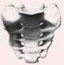
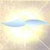
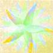
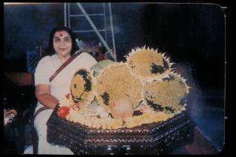

At the very outset one has to be a seeker of truth and with a scientific attitude one should approach the subject. It should be treated respectfully like a hypothesis and if found by experiments as truth should be accepted by honest people in the spirit of honesty. Because this is for one’s total benevolence and for the benevolence of all the world.
This knowledge is of very ancient times and mostly comes from India. Of course, every religion has talked about our second birth and also about the tree of life. As the knowledge of science comes from the West, but is accepted by the East, why should such a knowledge of reality be denied? Why not at least heed to it seriously, when it is the knowledge of the roots of all our civilisation and evolution? The nations have to think why the modern civilization is killing all human values. What we need is a careful introspection asto where we have gone wrong. Where did we miss out on our pathof progress? How has this decadence crawled into our society? Why are most of us sick with frustration and insecurity? Why are some of the people of the progressive countries succumbing to physical and mental deterioration? Science has no answer, so let us take to spirituality. Why not ask a question? Is there any other power that controls the universe?
As described in all the scriptures there is an all-pervading power of God’s love (Paramachaitanya). It is a subtle power which does all living work and which cannot be felt at the level of human awareness.Sahaja Yoga means that a seeker of truth (Sadhaka) has a birth-right to get his Self-realisation (Atma-Sakshatkar) spontaneously. Self-realisation or Self-knowledge is the destination of human evolution and also of all the religions. This is the last breakthrough human being has to achieve, for which there is a complete living machinery placed in the human spinal cord and in the brain. This machinery is being established step by step during our evolution. This living machinery works out through its power manifesting the parasympathetic and both sympathetic nervous systems. Whatever we achieve in evolution is expressed by our conscious mind through the central nervous system.
To connect us to this subtle energy which permeates into every atom and molecule, there is also a power of pure desire which is placed inthe sacrum bone of human beings, which is called as Kundalini.“Kundal” means “coils”. It exists in three and a half coils. There is a Divine mathematical co-efficience about three and a half coils.

This triangular bone is called “sacrum”, that means that the people in Greece in the ancient times knew about this divine sacred power of Kundalini; that is why they called this bone sacred. This sacrum bone is placed at the base of the spinal cord and it is triangular in shape.
The Kundalini is like a connecting cord as in every piece of electrical machinery, which connects the machinery to the main source of electricity. In the same way, when this energy of Kundalini is awakened, threads (some of them) rise and ultimately connect the human being to the all-pervading power (Paramachaitanya).
It is a spontaneous happening, it is a living process. The whole evolutionary process has been a living process, and now a stage has come for human beings to have the last state of Spiritual existence through Self-realisation. A human being can be compared to a seed which is not active spiritually, and has not started its living process of growth in Spirituality, but when it is embedded in the Mother Earth, the Mother Earth has the power, (with the help of water) to sprout the seed. In the same way the Kundalini can be awakened spontaneously by the power of Sahaja Yoga. When this Kundalini rises, a new life process starts in the human awareness, resulting in the growth of spirituality. This spiritual life growth is a new state into which a human being starts growing in his innate Divinity. This nourishes and enlightens his physical, mental, emotional and spiritual being.
This living process is very clearly described in Indian scriptures since ancient times. There are 108 Upanishadas in the Sanskrit language which have exposed the knowledge about Kundalini awakening and the spiritual ascent. Also it is indicated in other scriptures of other countries. In the Bible it is called the tree of life and it is quoted that,“I will appear before you like tongues of flames”. When the Kundalini rises, She passes through various centres which look like tongues of flames when enlightened. The cool breeze of the Holy Ghost of Pentecost is this power that you can feel in Sahaja Yoga. In the Gospel of St. Thomas, very clearly describes the Sahaja experience as the ultimate of our religious life. Also it says we must look after our centres. This Kundalini has to ascend and pierce through six subtle centres which are placed in the spinal cord and in the brain. The last breakthrough is the actualisation of the “Baptism” as one feels the cool breeze of the Holy Ghost emitting out of one’s fontanelle bone area.
The first centre is called the Mooladhara centre. It has four petals (sub-plexuses), is placed below the triangular bone and is responsible on the physical level of the manifestation of the Pelvic Plexus, which looks after all our excretion, inclusive of sex activity. When the Kundalini rises, then this centre becomes inactive in the excretion functions, but active in the support of the rising of the Kundalini.
Though the Kundalini has to rise through six centres, the first centre of Mooladhara protects the purity and chastity of the Kundalini at the time of its awakening.
The Mooladhara centre is for our innocence and one should know that innocence can never be destroyed. It is indestructible, though it might be covered by lots of clouds due to perverted human sexual behaviour. Thinking or relating everything to sex, we become sex-oriented, reduced to sex points and our behaviour is no more human but becomes even worse than animals- Flirtation, housewives becoming prostitutes, homosexuals, lesbians, abuse of children by the parents, incestual relations etc.
Despite all arbitrary abandonment of natural laws, the innocence, the power of Mooladhara, remains, though in a sleeping or a sick state which can be cured and normalised through Kundalini awakening. Innocence is the power that really supports the Kundalini when it is rising and normalising all the centres.
At the awakening of Kundalini, this centre stops all other functions of the centre. Thus the physical functions, to cater after the pelvic plexus of excretion, are completely stopped. Thus at that time a seeker becomes innocent like a child. In many people, one can see with the naked eye the rising of the Kundalini, whenever there is obstruction in the higher centres. But if there is an obstruction in the second or the third centre, one can see the triangular bone pulsating like a heart.
The second centre is the centre of Swadhistana. It has six petals and caters on the physical level to functions of the Aortic Plexus, and is the one which supplies us with the energy of creativity, of thinking, of being futuristic. It supplies power to the brain cells by converting fat cells into brain cells.
The third centre is called as Nabhi centre and has ten petals. It is behind the navel, and this centre gives us the power to sustain something within ourselves. On the physical level, it caters to the functions of the Solar Plexus.
The fourth centreis called as the Anahat Chakra, meaning the heart centre. It has twelve petals and is placed behind the sternum in the spinal cord. This centre produces the anti-bodies till the age of twelve years, and then these anti-bodies are circulated into the whole body to be ready to fight any kind of attack on the body or on the mind. If there is any attack on the person, these anti-bodies are informed through the sternum, which has a remote control of information.
The fifth centreis called as Vishuddhi chakra. This is placed in the neck of the human being and it has sixteen petals which look afterears, nose, throat, neck, tongue, teeth etc. This centre is responsible for communication with others, because through our eyes, through our nose, through our speech, through our hands, we communicate with others. On the physical level it caters for the Cervical Plexu

The sixth centreis called Agnya Chakra and has only two petals.This is the centre placed where the two optic nerves cross each other in the brain (optic chiasma). This centre caters for Pituitary and Pineal body which manifest the two institutions of ego and superego within us.

Lastly, the seventh centre, the most important centre, is the Sahastrara, which has got, according to Sahaja Yoga, a thousand petals. Actually there are a thousand nerves, and if you cut the transverse section of the brain you can see that all these petal-like structures of the brain are forming a lotus of a thousand petals. This centre of a thousand petals covers the limbic area of the brain, before realisation, like a closed bud of a lotus. Above this are covering the balloon-like structures of ego and superego. As the brain is covered completely when these two institutions join and calcification takes place on top of the head (Fontanelle bone area), that is how webecome a closed personality, (like an egg). At the time of our awakening, of our second birth (resurrection) this egg-like personality breaks at the tip of the head. (This is the reason, at the time of Easter, Christians offer eggs.)
There is an “autonomous nervous system” working in our being. “Auto” means “self’, so who is this Auto who is running this autonomous nervous system? Doctors have called it a self-propelled system, but who is the self?
The Self is the Spirit. This Spirit resides in the heart of every human being and is in a witness-like state. The Spirit is the reflection of God Almighty, while the Kundalini is the reflection of the power of God, of His desire which is the Primordial Mother, or you can call it Adi Shakti, Holy Ghost or Athena. So the Kundalini is the reflection ofthe Holy Ghost, while the Spirit is the reflection of God Almighty.The all-pervading power of love is the power of the Primordial Mother, which creates and evolves, and does all the living work.
There are actually three channels in the system. The one in the centre is called Sushumna, which caters to the parasympathetic nervous system, or the autonomous nervous system. The one on the left looks after the left sympathetic nervous system and on the right it looks after the right sympathetic nervous system. Now, it is not accepted yet, or discovered yet in medical science, that the left and right sympathetic nervous systems are two different juxtaposed systems.Their functions are absolutely opposite to each other.
The left side channel is called Ida Nadi and is connected to the right-side and the back of the brain. The two left and right channels cross at the Agnya chakra level. This channel caters for the left sympathetic nervous system. This channel looks after our emotional life and ourpast. It is the channel which creates our past. Whatever is the present today becomes the past tomorrow. The subconscious mind receives information from this channel. The subconscious mind has anage-old collective subconscious mind beyond it. Everything that wasin the past since creation resides dormant in the collective subconscious. This collective subconscious has all that is dead in the evolutionary process collected and stored. Whatever is dead or gone out of the circulation of evolution and also whatever is spilling out of the subconscious mind goes out into the collective subconscious mind.
The right side channel is called as Pingala Nadi, which crosses Ida Nadi at Agnya Chakra level. It is connected with the left side and thefront of the brain. This channel caters for the right sympathetic nervous system. On the right hand side there is the supra-conscious mind, which creates our future. Whatever we think about our futureis recorded on the right hand side, and it also has a collective supra-conscious, which has got all that is dead, which happened dueto over-ambitious, futuristic personalities, aggressive animals orplants.
The central path is called Sushumna, through which the Kundalini passes to pierce through the Fontanelle bone area (Brahmarandhra) to enter into the subtle energy of the all-pervading power. This is how the actualisation of Self-realisation (baptism) takes place. First the hands feel at the fontanelle bone area and on the finger tips the coolbreeze of the Holy Ghost. The hands are steady, they do not shake,they look normal but the seeker feels the ripples of cool breeze. For the first time he feels the existence of the all-pervading power.
It is easy to deny, but no use for a real seeker of truth to deny that there is any such thing as an all-pervading power, because one hasnot yet felt it. As already stated, one has to have a very open mind,like a scientist. Whatever may be the absolute truth for a saint, may not be for an ordinary human being. Still, one can keep one’s mind open and see for oneself and if it works out, then one would have an enlightened faith in Sahaja Yoga and not a blind faith.
As earnest, honest people, one must understand that this is for the transformation all people who have been waiting for their ascent. All our problems come from human beings. If human beings are transformed into a new realm of reality, of collective consciousness when they are aware of themselves (Self-knowledge) and also aware within themselves about others, as innate knowledge on their central nervous system, the entire problem of our personal, social, economic and political life, will be solved. But for that one has to become humble and should know that science cannot explain how the living process works. The principles of this power can only be understood when one feels this power after Self-realisation.
Sahaja Yoga is not just a fashion, cult or alternative method. Thus there is no organisation as such in Sahaja Yoga. There is nomembership in Sahaja Yoga except that we had to have a nominal Trust. By that Trust we have to operate for legal affairs, but it has no permanent list of names of people. There is no dead organisation) but a living collective single organism. The body has the cells, after Self-realisation the spirits of the cells are enlightened by SahajaYoga. The seeker’s being has to actually be sprouted by Kundalini awakening. Then becoming is important.
When the Kundalini rises one can feel easily the cool breeze coming out of one’s fontanelle bone area on top of one’s head. One can feel it oneself, and one has to certify oneself. One can also feel this coolbreeze all around oneself. This cool breeze is the one that is manifested by the all-pervading power of Divine Love. For the first in life one actualises the experience of feeling this subtle divine power. Even after feeling this power one has to understand that this Kundalini is not yet fully established. In ordinary mechanical language we can say that the connection is not established. One has to work it out. Though sprouting in a seed is spontaneous, the gardener has to now look after the tender sapling. In the same way a seeker has to look after his Self-realisation in the beginning. Some people achieve heights very easily, but some have to work for six or seven months and are still not alright. Under these circumstances it is important that one must know and understand where the problem is by understanding the proper decoding system and its practices in Sahaja Yoga.
Thus a human being rises above all the shackles of slavery. One does not need any more guidance from any Guru. One becomes one’s own master, no longer groping in the dark for support. One becomes an absolutely free person. No one can intimidate or manipulate a Sahaja Yogi. People come to Sahaja Yoga from many sects, religious organisations and schools of thought, but their conditionings drop-off. No one can condition a realised soul after Sahaja Yoga.
This freedom is very beautiful, and then slowly one learns to fly like a bird on one’s own until one masters it and knows all about Divinity.
After Sahaja Yoga the personality rises so much above others, and the sense of discretion becomes so sharp and perfect, that the media, television, entrepreneurs, fake masters, misguiding or modern methods, nothing can deviate the mind from the righteous path.
No one can lead a Sahaja Yogi astray, unless and until a Sahaja Yogi himself falls into some temptation, fear or manipulation.
The Sahaja Yogi enjoys his freedom and that of other Sahaja Yogis. He knows his powers and has knowledge about himself. He becomes a powerful, free saint leading an angelic life.
At the very beginning of this happening one starts feeling on one’s fingertips the problems on the centres. One has to just decode the feelings that one gets on one’s own finger tips and has to also knowthe practice that would solve these problems. The finger tips are theending of the left and right sympathetic nervous systems. They become enlightened as they reflect the subtle centres.
By using this method there have been so many people who have been cured completely of very serious, incurable ailments, like blood cancer etc. There are two doctors in Delhi University who have already got M.D. degrees for curing incurable diseases, and there is one more who is also completing her thesis about Sahaja Yoga. There are seven doctors in London, three in Australia and one in Taiwan who are trying to record all those who have been cured through Sahaja Yoga practices. It does not only solve physical problems, but also mental and spiritual problems. There are many mental cases who have been cured with Sahaja Yoga. There are some doctors who are now in charge of mental hospitals because of their expertise in Sahaja Yoga. We have two psychiatrists very highly placed. One is in charge of seven hospitals in London, and one is the dean of the faculty of Psychology in Riyadh. There are many other doctors and Sahaja Yogis who are curing through Sahaja Yoga all over the world. It must be mentioned that Sahaja Yoga is not for curing people but for achieving Self-realisation. Thus as a by-product one gets physical, mental and spiritual well-being in totality.
There are also many, many people who have given up their bad habits of smoking, drinking and drugs, sometimes overnight. So many people who were drug addicts have given up drugs because they have found that power of the Spirit within themselves that helps them to enjoy their own being and also gives them power to stop them running after these enjoyments which are very, very transitory, have bad reactions and are destructive in the long run. It is not a rational or mental understanding, but the light of the Self which gives power and expels the darkness spontaneously. Many people who are being harmed by the false gurus, cults and anti-cults are absolutely cured and have become very great people in their own fields. So many have achieved great heights in their accomplishments. The ex-President of the Hague High Court, the late Dr.Najendra Singh, was a Sahaja Yogi.
Apart from physical, mental and emotional problems, we have much wider problems in our society. It is caused by lack of balance and wisdom and no sense of collectivity.
The first problem is of children and the family. We have many marriages in Sahaja Yoga, and it is surprisingly note-worthy that in all these years there are very, very few divorces among those people who got married in Sahaja Yoga. Moreover the children of these people are mostly born realised souls. They are the ones who are special people who have come on this earth, at this time and having selected their parents as Sahaja Yogis. One can feel the cool breeze coming out of their fontanelle bone area or from their body just after their birth. They have a very joyous, serene expression and their eyes are sparkling at the time of birth.

The effects of Sahaja Yoga act on agriculture through the divine coolbreeze (vibrations). Many farmers and specialists of agriculture have experimented and found that the crop that grows out of non-hybrid seeds which are being vibrated with the divine power of the coolbreeze sometimes grows eight or ten times more than the hybrid seeds for which one has to pay so much to some organization all the time because hybrid seeds have no power to regenerate. The experiments were carried out very extensively by Dr. Hamid of Austria and by Dr.Sangwe of Nasik.
It also helps ecological problems in a big way, because man becomes extremely balanced and doesn’t use things which are not required for him, nor does he make machinery work in such a way that it createsan imbalance and dominates him. Sahaja Yoga has also been successful in combating acid rain in some forests of Austria.
Ordinary Sahaja Yogis can become personalities who are Sahaja doctors and Sahaja scientists and can also create them out of other human beings, because they have powers to give realisation to others, also to cure others. As one light enlightens another light, Sahaja Yoga goes on spreading in all kinds of areas. As this is a living, invaluable process, you cannot pay for it. Also the knowledge (Gyana) which makes you a Sahaja Yogi (Gnostic) is given absolutely free of charge.
Now Sahaja Yoga is followed in 140 nations and all these 140 nations are growing day by day. There is no money that can be paid for this living process. That is why so many false gurus, who are making money, and cults and anti-cults, who are trying to project some sort of false image just to make money, are all very much against Sahaja Yoga. They are not against each other. But they should also understand that this is the Golden Age of emancipation, resurrection and last judgement; if we can achieve it, all of us, including them also, will have the blessings of the Divine love which has been promised a long time back.
There are some new mushroom organisations called anti-cults who have no knowledge, no legal authority or legal right, who have come up and are just making money. They are another type of cult. The people who have suffered in those cults and anti-cults have all been helped by Sahaja Yoga in thousands.
A human being has got ten valencies of humanity built within, which when enlightened through Kundalini awakening make him a very balanced, righteous and a really, innately, religious person. One may follow any religion outwardly, but one is quite capable of committing any sin or murdering someone, or doing something which is very hurtful or dangerous for society. Some may be righteous out of fearor from family conditioning. Of course, there are many who are honestly devoted or very innocent who follow these religions, but they do not know that these religions were created for one to ascend into higher, realms of spirituality. But a Sahaja Yogi, once his innate religion is awakened, becomes a person who has such a balance andwisdom as part and parcel of his being, that he can never think of committing any sin, or doing something which is arbitrary, or making somebody miserable, or killing someone. Such a person can only be a Yogi who is united with the all-pervading divine power. He is called as a Sahaja Yogi because he has all the knowledge of Sahaja (spontaneous) Kundalini awakening. He knows spontaneously how to awaken the Kundalini, he knows all about his inner machinery, his own Spirit and of the Kundalini state of all the others who are not Yogis or non-yogis. Also he knows, as truth which is proven, about the power of love of the Primordial Mother, the Holy Ghost. Because of this he is innately a very compassionate, dynamic, contented, confident person.
Sahaja Yogis are now expressing the dynamism of their values and life in different areas all over the world. There is also very beautiful compassionate, loving relationship working together in all the Sahaja Yogis of all the nations.
There are some business people who were completely stunned by the opposition of the labour in their businesses. With Sahaja Yoga the labour and the master relationship has improved so much that they are regarded as the most successful businessmen. Business has improved and people are working like one family, and really enjoying working with such Sahaja Yogi business people.
Creativity in literature, like poetry, drama, novels and writings, is absolutely miraculously working in some people, so that people whonever knew a word of the Urdu language have started composing beautiful lyrics in that language. The same with music. There are some very great artists who have become very big names because they were blessed by the Adi Shakti. They say that with the blessings of Sahaja Yoga they have risen so much higher in the realm of music.In the field of art there are some Sahaja Yogis who, after coming to Sahaja Yoga, have become renowned in art. Also surprisingly people have improved economically. In England, where unemployment is formidable, you cannot find a single unemployed Sahaja Yogi.
All these things are worldly achievements, by the blessings of the Divine power, also the wisdom or the balance that is within the Sahaja Yogis. But above all, what Sahaja Yogis get is the powerful attention that penetrates into any area and acts. This means that if a Sahaja Yogi puts his attention onto somebody, it acts and tries to help that person to get over his problems without doing anything outwardly. This attention is so beautiful that from the beginning it indicates clearly on one’s central nervous system, on one’s fingertips, the different centres of other people and also one’s own. These signals are decoded already and one can verify the decoding. If one knows how to cure, or correct those centres, one can help other people very well. Moreover as a Sahaja Yogi becomes an egoless personality he does not feel that he has done something to oblige someone. Sahaja Yoga is the pure love of God which is living and invaluable. No money can be charged for this cure or for Kundalini awakening.
It makes one very dynamic and one is not afraid of standing for the truth, and no one can manipulate them. Sahaja Yogis have met even some honest, intelligent journalists who came to Sahaja Yoga. They have been extremely positive and are standing only for real truth and not just for sensational falsehood. These are modern days of corruption and delusion (Kali Yuga). When falsehood becomes the nature of human beings, they destroy all higher values in the mud of money and assumed powers. These money-minded people believe in satanic methods of harming good people with lies, false scandals and vulgarity.
There are Sahaja Yogis who are in the areas of teaching or running schools. These people are doing marvellous work. They have handled some very difficult children and moulded them into such beautiful personalities. It is amazing how their Divine love has brought forth such an advancement in these children who were supposed to be very dangerously violent. Of course, some hard nuts could not be tackled. With Sahaja Yoga, many children who were very dull in class have become very alert and intelligent and showing great results in their studies. Even very difficult exams like chartered accountancy, architecture, engineering and medicine are passed in record time, with flying colours, by Sahaja Yogis.
Sahaja Yoga is for the emancipation of the whole world, at every level. Once we have people of a certain number in Sahaja Yoga, it will start triggering understanding of real righteousness, religiousness and our love for God, and enlightened faith in God. This is how the resurrection time is going to be worked out. This is the last judgement time, and everyone can judge him or herself through the light of the Spirit.
The human being, which is like a Divine computer, only has to be plugged into the mains. Modern Sahaja Yoga has achieved a new method by which en-masse realization can be given. In Russia we used to get 14,000 people in a stadium for a programme, and 90% of them got realization at every meeting. So, this is a great achievement in these days of chaos. Educated Russians are very introspective and very open-minded, very scientific by temperament, and they just want to know about something that is beyond human comprehension.
Despite the chaotic conditions of the world, these are special times. Sahaja Yoga can be called as Maha Yoga because it’s working on such a mass scale. At the time of Shri Rama only one, Nachiketa, got his realization, but today there are thousands and thousands who have mastered Sahaja Yoga.
Definitely our Creator, God Almighty, is anxious to save the world from its destruction. Thus he is working through the power of his desire, which is the primordial mother, (Adi Shakti, Holy Ghost,Athena.)
The Brahma Chaitanya (all-pervading power) has itself become very active as a new type of age called “Krita Yuga” has started. It is achieving results and producing miracles. It is not only talk or reading scriptures, but it is actualisation and the proof. Of course, all false people are afraid of facing the truth, because Sahaja Yoga goes against their interests. They are challenging and opposing violently the spread of Sahaja Yoga. The Satya Yuga has to be established by the Sahaja Yogis. Now they are not alone like Christ Our Lord, Mohamed the Prophet, Socrates the Philosopher or other incarnations, seers and realised souls. They are in thousands. They are not in any way hampered by the few people who are trying to harm their collective progress. The truth will be established and thus the dawn of Satya Yuga (the Kingdom of God) would be seen on the horizon. The message of Sahaja Yoga is that even these negative people have to accept the truth and enjoy the blessings of the Divine Love.